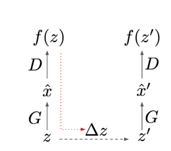
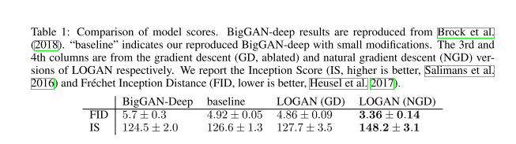
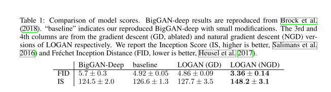

1. どんなもの？
- GANのIS，FIDを向上させる系の論文
- BigGANベースに大きなアーキテクチャの変更なしに高精度な生成．
2. 先行研究と比べてどこがすごい？
- ベースはBigGAN
- 潜在変数をDiscriminatorが騙されやすいように更新した後，パラメータを更新することでhigh qualityとdiversityを実現
3. 技術や手法の"キモ"はどこ？
- キモは，潜在変数をDiscriminatorが騙されやすいように更新した後，パラメータを更新すること
Latent Optimisation
- 潜在変数をDiscriminatorが騙されやすいように更新した後，パラメータを更新する $$ \Delta z = \alpha \frac{\partial f(z)}{\partial z} $$ $$ z' = z + \Delta z $$
- ここで，f(z)は$z$をGeneratorに入力し得られたデータをDiscriminatorに与えることで得られる出力


Natural Gradient Descent
- 更新する$z$の空間はユークリッド空間でないことが多い．
- 通常の勾配法ではうまく更新できないことがある．
- 自然勾配法を用いて$z$を更新する．
$$ \Delta z = \alpha F^{-1} \frac{\partial f(z)}{\partial z} = \alpha F^{-1}g $$
- ここで，$F$はフィッシャー情報行列
- $F$の算出はcost大なので，近似すると($\beta$はハイパラの定数)
$$ F' = g \cdot g^T + \beta I $$
$$ \Delta z=\alpha\left(\frac{I}{\beta}-\frac{g g^{T}}{\beta^{2}+\beta g^{T} g}\right) g=\frac{\alpha}{\beta}\left(1-\frac{|g|^{2}}{\beta+|g|^{2}}\right) g $$
4. どうやって有効だと検証した？
Imagenetの生成で実験．
baseline(a)よりLOGAN(b)の方がdiversityのある生成ができている．
 

5. 議論はあるか？
- $z$を更新するだけでここまで精度が上がるのは驚き
- ただ，baselineがBigGANなので庶民には手が出せない
- dynamicの話とかappendixについては，まだ見れてない